Here are some of the bigger projects I've worked on:
WWW.COOLROOFS.ARUP.COM
As a digital consultant at Arup, I was reached out to by the Arup Community Engagement team for assistance in designing/implementing a toolkit containing information and lessons learned from Arup's non-profit work with New Story, Techo, and Échale. As part of this work, I conducted direct stakeholder engagement with volunteers and full-time staff at Arup and its non-profit partners to capture what information would be most important to display on the toolkit and what medium it would be best hosted on. Following this engagement, I settled on creating a Webflow website as a website seemed to be the most easily accessible touchpoint for the toolkit's target audience.
Before developing in Webflow, I mapped out the information architecture for the site and created mockups in order to validate the structure, look, and feel of the site with the Arup team. This allowed for the team to provide me with feedback prior to development and for them to begin generating/translating content for the site during development. See below for a full slide deck outlining the whole process:
Redesigning LinkedIn with Meetups
In my senior year of college, a group of friends and I decided to design a new feature for LinkedIn, a tool that we had found ourselves using quite often as we were getting into peak job hunting season. Through our own personal experiences as well as from engaging with real users, we saw a potential user need for a feature on the tool which could facilitate one-on-one networking with others on the platform. We set about prototyping what this new feature could look like and validated our design through user testing.
You can view the full project write-up here.
City Fun Center Website Design
In my senior year of college, as part of a class where students would work with real-world clients, a team of classmates and I reached out to a local family arcade and worked with them to redesign their web presence. This work included interviewing customers, mapping out the available content, creating a basic site-architecture, and finally protoyping the design.
You can view the final mockup for the site here.
Special thanks to Amy Yee, Kevin Sy, and Yuanhao Zhu for collaborating with me on this project!
Delta Dashboard Project
The Delta LAX Dashboard project was the primary focus of my 2019 summer internship with Arup's Los Angeles office. The goal of the project was to make the work of on-site engineers more efficient by providing a geolocation-based interface for finding construction documentation and records. As an intern, I introduced user testing as part of the team's process and played researcher, designer, and developer roles throughout the project.
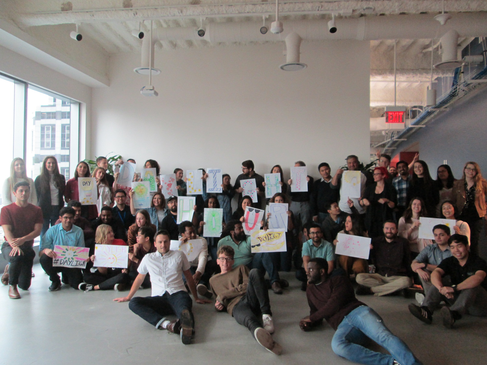
You can find a presentation recapping my internship experience here.
Prior to my internship, the Delta LAX Dashboard project had been a spearheaded primarily by developers from Arup's Digital Insights team. Coming in with a UX background, I proposed conducting usability studies in order to test not just the usability, but also the functionality of the application. I was responsible for developing the testing scripts as well as recruitment for a majority of these studies. Throughout the summer, I got the chance to work with various on-site engineers throughout Arup's many disciplines. Regularly reporting my discoveries to the team, my research led to results including but not limited to: better feature discoverability, a new feature for construction specifications, new filtering options, and improved information architecture.
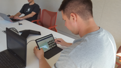
Towards the end of my internship, I also got a chance to pilot a few card-sorting studies as part of an effort to understand how engineers organize their data for a future project related to project management and filing systems.
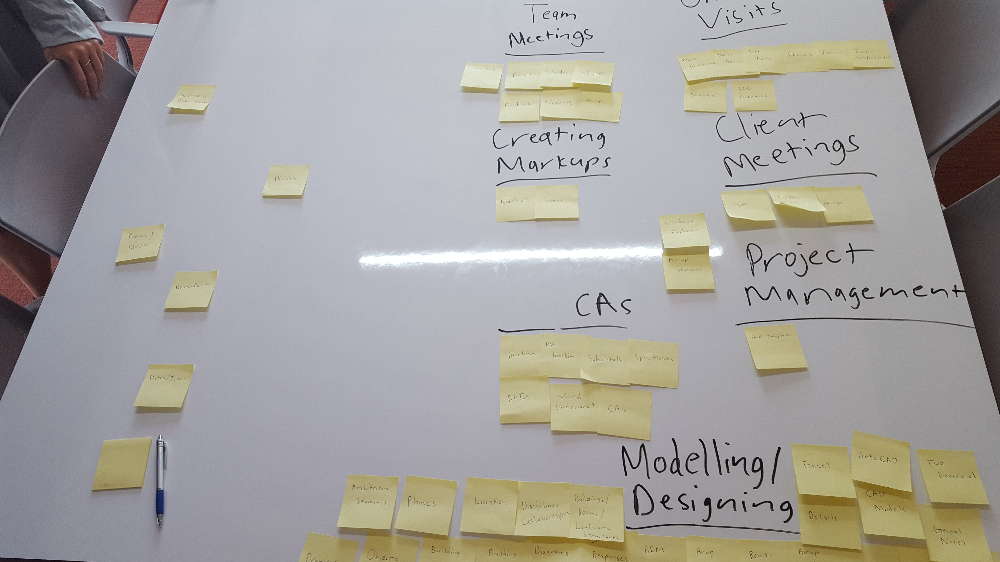
Throughout my internship, it was also my responsibility to maintain, update, and communicate the project's design to both developers within the office as well as developers from other offices in the Americas region. I used Figma as my primary tool for accomplishing these tasks and generally used Google's material guidelines to inform my designs with the rare exception of a few decisions related to the results of my usability testing and research. Throughout my internship, I organized several design critique sessions with both my design mentor as well as my team in order to get feedback and iterate on my designs.
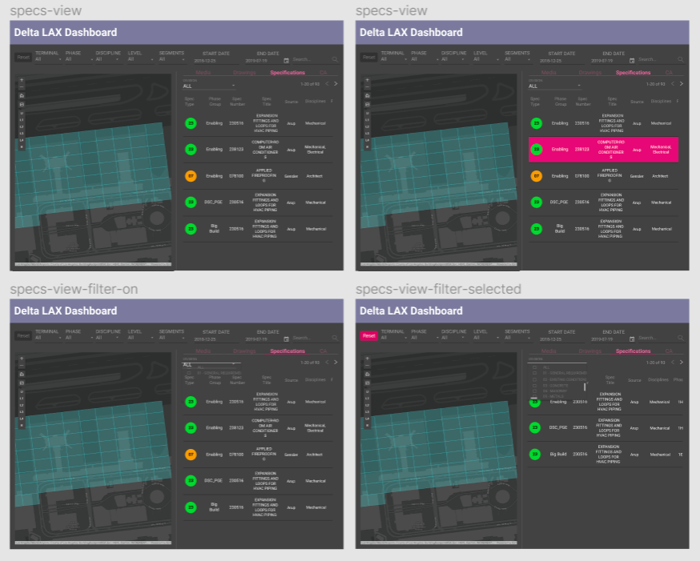
An older verion of the Figma mockups from my internship can be found here.
On the development end, my primary role throughout the internship was to design, develop, and maintain the front-end for a feature which allowed for users to upload files both to the app's database as well as to Arup's internal network. Some tools I utilized included: Angular, NGRX, and SCSS. On top of that feature, I was also responsible for code review, code refactoring, and numerous other minor features and bugfixes.
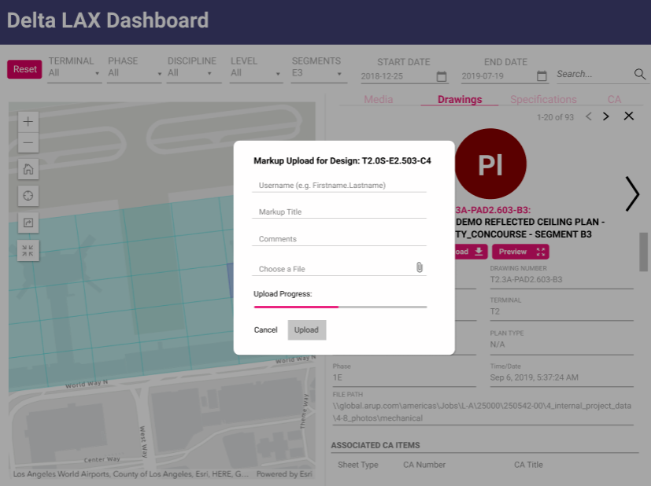
Toxicon
The Toxicon app was developed with the purpose of tackling the problem of toxcity in online videogames by visualizing the emotional context of the audio/text commmunication inputted by our users in order to allow for self-reflection. The completed version of our app along with documentation on our design process can be found on github. In order to showcase the final product, we produced a brief 2 minute video that goes over Toxicon's purpose and functionality which can be found below. Credits to Wayne Phung and Helen Cheng for working with me on this project.
My group found that in most online encounters, many of the more toxic individuals would not consider the things they were saying to be toxic. Because of this, we wanted to create an application that could review transcriptions of in-game communications and provide both contextual and emotional data in order to determine whether or not someone was being toxic in their games. In order to narrow the focus of our app's purpose, we created several user scenarios depicted through storyboards such as the one below.
Prior to coding our app, we used Figma to create digital mockups which featured some of the key ideas we wanted to incorporate into our final product. In the end, two full mockups were created each with a different approach on how we wanted to tackle toxicity. Both mockups had elements that were either used or discarded over the course of our design process and many ideas never came to fruition. For example, one idea that was pitched early on included a version in which we would have users rate the toxcicity of other users, however, we found that method to be too subjective and thus decided to rely on AI for the task rather than people.
A full verion of one of the Figma mockups can be found here.
Our app was created with a Node.js backend which interacted with the IBM Watson Speech-to-Text and Natural Language Understanding APIs in order to provide contextual and emotional analysis on inputted text or audio data. SQLite was used to store our data for manipulations which could be visualized through Plotly and our frontend was built through HTML, CSS, and jQuery.
The completed version of our app can be found on github. In order to showcase the final product, we produced a brief 2 minute video that goes over Toxicon's purpose and functionality which can be found below. Credits to Wayne Phung and Helen Cheng for working with me on this project.
Cognition and Cognitive Neuroscience Website
A complete overhaul of the Cognition and Cognitive Neuroscience Lab's website. I was tasked with creating and proprosing a redesign which I would then implement. I hope to eventually utilize Google Analytics metrics in order to implement new features once the website goes live. The website is now live and can be found here.
When I was exploring my research options at UCSD freshman year I found myself browsing through many of the websites run by labs on campus and when I saw the CCN Lab's website I immediately spotted an opportunity for change. When I joined the lab in the spring of 2017, it became my goal to have the opportunity to redesign what I believed was a well-intentioned website that simply needed a good polish.
 Over the summer of 2017, I would spend my time developing a Figma prototype of my planned redesign for the lab website. My goal was to keep the overall aesthetic of the redesign as similar to the original website as possible while adding some modern elements and features. I presented my final mockup to the lab manager at the CCN Lab, Steven Pan, in the fall of 2017 but was told a website overhaul was not being looked into at the time. After being fortunate enough to work on another web project I was given the opportunity to present my mockup to Dr. Timothy Rickard, who headed the CCN Lab, and I was given permission to begin work on redesigning the website over the summer of 2018.
Over the summer of 2017, I would spend my time developing a Figma prototype of my planned redesign for the lab website. My goal was to keep the overall aesthetic of the redesign as similar to the original website as possible while adding some modern elements and features. I presented my final mockup to the lab manager at the CCN Lab, Steven Pan, in the fall of 2017 but was told a website overhaul was not being looked into at the time. After being fortunate enough to work on another web project I was given the opportunity to present my mockup to Dr. Timothy Rickard, who headed the CCN Lab, and I was given permission to begin work on redesigning the website over the summer of 2018.
The final version of the Figma mockup can be found here.
Over the course of development I worked closely with both Steven Pan and Dr. Rickard to ensure that the final product would meet the standards of a reputable lab while being both aesthetically appealing and responsive across a multitude of devices. I primarily based my work on the mockup I created, but also drew further inspiration from my analysis of other lab websites. The website was built utilizing the Bootstrap framework but also with a great deal of custom HTML and CSS as well as a few lines of JavaScript.
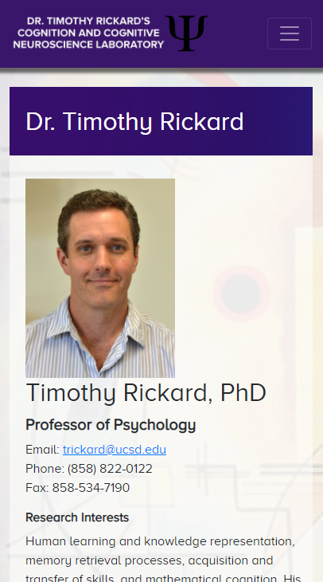
Algo-Writer
Algo-writer was a mobile-based webapp built by my classmates and I for an interaction design course at UCSD. The app was made with goal of helping novice programmers envision the algorithms within their programs. A testable version of Algo-writer can be found here and the source code can be found on github. We also produced a minute long video that walks through the app which can be found below. Credits to Jason Ho, Ethan Cai, and Maya Bello for working with me on this project.
Algo-writer underwent several iterations both physical and digital throughout its design process. Many of these prototypes were used both for user testing as well for ideation. Initially, we created two paper prototypes each with a different concept on how to tackle the issue of difficulties experienced by novice programmers. Gradually, as development progressed, many ideas from both paper prototypes were incoporated into the final design. With the design completed, we used Figma to create a digital mockup of how we wanted our app to look before coding it. This digital mockup provided us with a framework to improve upon as we built towards the final product.

A verion of the digital Figma mockup can be found here.
Throughout the entire development process of Algo-writer, we worked closely with our user base to improve the quality of our app. Starting from the needfinding phase, we interviewed Computer Science students at UCSD on the difficulties they had as novice programmers and from their testimony we worked to create an app that could alleviate the problems they experienced as new programmers. We conducted several in-person walkthroughs throughout the design process and had users navigate through and provide feedback on not just the final product but also through our digital and paper mockups. Once a working version of our app was published online, we were able to have several users test it simultaneously and gather data on their usage through Google Analytics.

Algo-writer was built on a Node.js backend and utilized HTML Handlebars as well as the Bootstrap framework on top of vanilla HTML, CSS, and jQuery. Every iteration underwent several sessions of user testing and feedback from our user tests was used to improve as well as debug the app over time.
Website for Steven Pan
"Andrew's web design work is superb. He has helped build two websites for me and/or my employer, one that showcases my research program/outreach and the other for a major laboratory at an R1-level university. In both cases, Andrew was instrumental in creating a modern, adaptive, and visually appealing website with innovative technical features and a slickly designed interface. He was incredibly efficient, harnessed the latest web design tools, and the results were fantastic. Further, throughout the design process Andrew was laser-focused on the mission requirements and exceptionally responsive to feedback. Andrew is an excellent web designer and I cannot recommend him highly enough!"
- Steven C. Pan
Steven, a graduate student at the Cognition and Cognitive Neuroscience Lab, first approached me about the idea of redesigning his own personal website after I had initially proposed a redesign of the lab's website which he was managing. Despite having made a deployable version of his website in late 2017, I continue to work closely with Steven in maintaining and updating his personal website, which can be found here. As my first experience working in a non-class setting and engaging with a real client I was able to learn a great deal on how to get my ideas across while still satisfying my client's needs. This project also opened up new opportunities by allowing me to prove my ability to the head of the Cognition and Cognitive Neuroscience Lab, Dr. Timothy Rickard, and gave me a chance at going through with redesigning his lab's website.
Steven initially had a single static HTML page which acted as a CV, however, he wanted to improve his web presence and upgrade both the content and visual quality of his website.
I worked closely with Steven throughout the whole design process, implementing any changes he requested while providing feedback on whether the changes would be tenable and/or appealing, changing my implementations to meet these criteria whenever possible. The website was built from the ground up through HTML, CSS, and a little bit of JavaScript. It did, however, utilize the Bootstrap framework to allow for more a responsive and dynamic design implementation. An older version of the website's code can be found here.
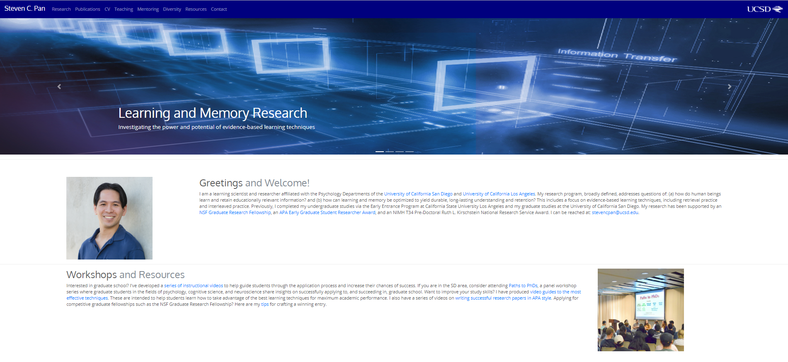
The Delta LAX Dashboard project was the primary focus of my 2019 summer internship with Arup's Los Angeles office. The goal of the project was to make the work of on-site engineers more efficient by providing a geolocation-based interface for finding construction documentation and records. As an intern, I introduced user testing as part of the team's process and played researcher, designer, and developer roles throughout the project.
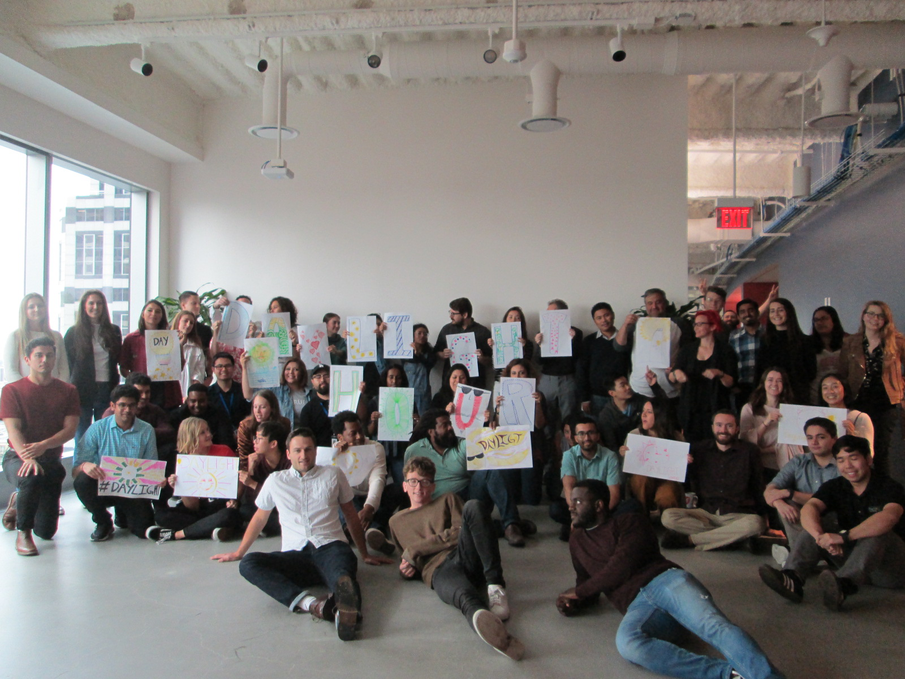
You can find a presentation recapping my internship experience here.
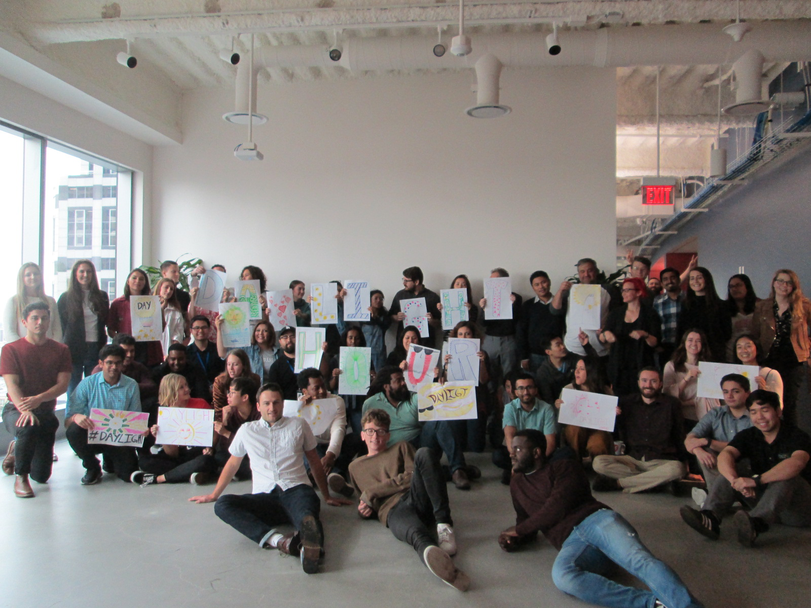
You can find a presentation recapping my internship experience here.
Prior to my internship, the Delta LAX Dashboard project had been a spearheaded primarily by developers from Arup's Digital Insights team. Coming in with a UX background, I proposed conducting usability studies in order to test not just the usability, but also the functionality of the application. I was responsible for developing the testing scripts as well as recruitment for a majority of these studies. Throughout the summer, I got the chance to work with various on-site engineers throughout Arup's many disciplines. Regularly reporting my discoveries to the team, my research led to results including but not limited to: better feature discoverability, a new feature for construction specifications, new filtering options, and improved information architecture.
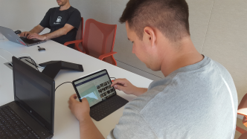
Towards the end of my internship, I also got a chance to pilot a few card-sorting studies as part of an effort to understand how engineers organize their data for a future project related to project management and filing systems.
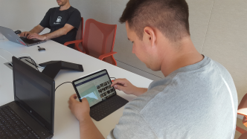
Towards the end of my internship, I also got a chance to pilot a few card-sorting studies as part of an effort to understand how engineers organize their data for a future project related to project management and filing systems.
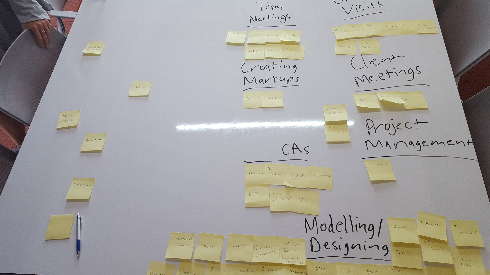
Throughout my internship, it was also my responsibility to maintain, update, and communicate the project's design to both developers within the office as well as developers from other offices in the Americas region. I used Figma as my primary tool for accomplishing these tasks and generally used Google's material guidelines to inform my designs with the rare exception of a few decisions related to the results of my usability testing and research. Throughout my internship, I organized several design critique sessions with both my design mentor as well as my team in order to get feedback and iterate on my designs.
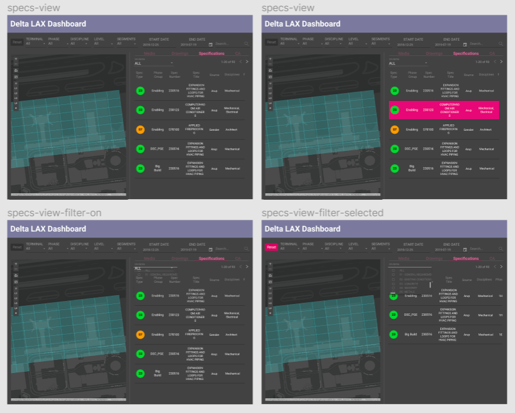
An older verion of the Figma mockups from my internship can be found here.
On the development end, my primary role throughout the internship was to design, develop, and maintain the front-end for a feature which allowed for users to upload files both to the app's database as well as to Arup's internal network. Some tools I utilized included: Angular, NGRX, and SCSS. On top of that feature, I was also responsible for code review, code refactoring, and numerous other minor features and bugfixes.
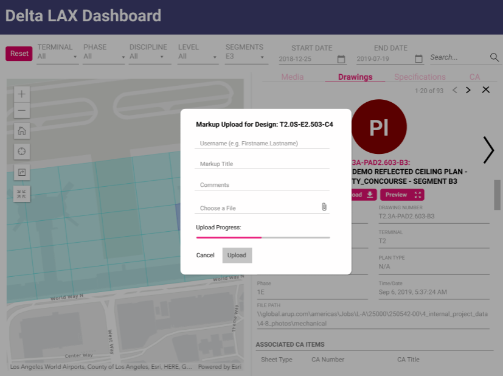
The Toxicon app was developed with the purpose of tackling the problem of toxcity in online videogames by visualizing the emotional context of the audio/text commmunication inputted by our users in order to allow for self-reflection. The completed version of our app along with documentation on our design process can be found on github. In order to showcase the final product, we produced a brief 2 minute video that goes over Toxicon's purpose and functionality which can be found below. Credits to Wayne Phung and Helen Cheng for working with me on this project.
My group found that in most online encounters, many of the more toxic individuals would not consider the things they were saying to be toxic. Because of this, we wanted to create an application that could review transcriptions of in-game communications and provide both contextual and emotional data in order to determine whether or not someone was being toxic in their games. In order to narrow the focus of our app's purpose, we created several user scenarios depicted through storyboards such as the one below.
Prior to coding our app, we used Figma to create digital mockups which featured some of the key ideas we wanted to incorporate into our final product. In the end, two full mockups were created each with a different approach on how we wanted to tackle toxicity. Both mockups had elements that were either used or discarded over the course of our design process and many ideas never came to fruition. For example, one idea that was pitched early on included a version in which we would have users rate the toxcicity of other users, however, we found that method to be too subjective and thus decided to rely on AI for the task rather than people.
A full verion of one of the Figma mockups can be found here.
Our app was created with a Node.js backend which interacted with the IBM Watson Speech-to-Text and Natural Language Understanding APIs in order to provide contextual and emotional analysis on inputted text or audio data. SQLite was used to store our data for manipulations which could be visualized through Plotly and our frontend was built through HTML, CSS, and jQuery.
The completed version of our app can be found on github. In order to showcase the final product, we produced a brief 2 minute video that goes over Toxicon's purpose and functionality which can be found below. Credits to Wayne Phung and Helen Cheng for working with me on this project.
A complete overhaul of the Cognition and Cognitive Neuroscience Lab's website. I was tasked with creating and proprosing a redesign which I would then implement. I hope to eventually utilize Google Analytics metrics in order to implement new features once the website goes live. The website is now live and can be found here.
When I was exploring my research options at UCSD freshman year I found myself browsing through many of the websites run by labs on campus and when I saw the CCN Lab's website I immediately spotted an opportunity for change. When I joined the lab in the spring of 2017, it became my goal to have the opportunity to redesign what I believed was a well-intentioned website that simply needed a good polish.
Over the summer of 2017, I would spend my time developing a Figma prototype of my planned redesign for the lab website. My goal was to keep the overall aesthetic of the redesign as similar to the original website as possible while adding some modern elements and features. I presented my final mockup to the lab manager at the CCN Lab, Steven Pan, in the fall of 2017 but was told a website overhaul was not being looked into at the time. After being fortunate enough to work on another web project I was given the opportunity to present my mockup to Dr. Timothy Rickard, who headed the CCN Lab, and I was given permission to begin work on redesigning the website over the summer of 2018.
The final version of the Figma mockup can be found here.
Over the course of development I worked closely with both Steven Pan and Dr. Rickard to ensure that the final product would meet the standards of a reputable lab while being both aesthetically appealing and responsive across a multitude of devices. I primarily based my work on the mockup I created, but also drew further inspiration from my analysis of other lab websites. The website was built utilizing the Bootstrap framework but also with a great deal of custom HTML and CSS as well as a few lines of JavaScript.
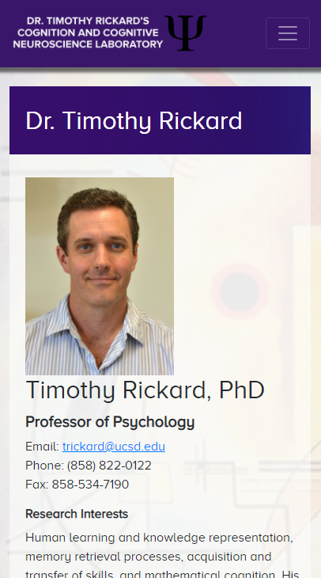
Algo-writer was a mobile-based webapp built by my classmates and I for an interaction design course at UCSD. The app was made with goal of helping novice programmers envision the algorithms within their programs. A testable version of Algo-writer can be found here and the source code can be found on github. We also produced a minute long video that walks through the app which can be found below. Credits to Jason Ho, Ethan Cai, and Maya Bello for working with me on this project.
Algo-writer underwent several iterations both physical and digital throughout its design process. Many of these prototypes were used both for user testing as well for ideation. Initially, we created two paper prototypes each with a different concept on how to tackle the issue of difficulties experienced by novice programmers. Gradually, as development progressed, many ideas from both paper prototypes were incoporated into the final design. With the design completed, we used Figma to create a digital mockup of how we wanted our app to look before coding it. This digital mockup provided us with a framework to improve upon as we built towards the final product.
A verion of the digital Figma mockup can be found here.
Throughout the entire development process of Algo-writer, we worked closely with our user base to improve the quality of our app. Starting from the needfinding phase, we interviewed Computer Science students at UCSD on the difficulties they had as novice programmers and from their testimony we worked to create an app that could alleviate the problems they experienced as new programmers. We conducted several in-person walkthroughs throughout the design process and had users navigate through and provide feedback on not just the final product but also through our digital and paper mockups. Once a working version of our app was published online, we were able to have several users test it simultaneously and gather data on their usage through Google Analytics.
Algo-writer was built on a Node.js backend and utilized HTML Handlebars as well as the Bootstrap framework on top of vanilla HTML, CSS, and jQuery. Every iteration underwent several sessions of user testing and feedback from our user tests was used to improve as well as debug the app over time.
"Andrew's web design work is superb. He has helped build two websites for me and/or my employer, one that showcases my research program/outreach and the other for a major laboratory at an R1-level university. In both cases, Andrew was instrumental in creating a modern, adaptive, and visually appealing website with innovative technical features and a slickly designed interface. He was incredibly efficient, harnessed the latest web design tools, and the results were fantastic. Further, throughout the design process Andrew was laser-focused on the mission requirements and exceptionally responsive to feedback. Andrew is an excellent web designer and I cannot recommend him highly enough!"
- Steven C. Pan
Steven, a graduate student at the Cognition and Cognitive Neuroscience Lab, first approached me about the idea of redesigning his own personal website after I had initially proposed a redesign of the lab's website which he was managing. Despite having made a deployable version of his website in late 2017, I continue to work closely with Steven in maintaining and updating his personal website, which can be found here. As my first experience working in a non-class setting and engaging with a real client I was able to learn a great deal on how to get my ideas across while still satisfying my client's needs. This project also opened up new opportunities by allowing me to prove my ability to the head of the Cognition and Cognitive Neuroscience Lab, Dr. Timothy Rickard, and gave me a chance at going through with redesigning his lab's website.
- Steven C. Pan
Steven, a graduate student at the Cognition and Cognitive Neuroscience Lab, first approached me about the idea of redesigning his own personal website after I had initially proposed a redesign of the lab's website which he was managing. Despite having made a deployable version of his website in late 2017, I continue to work closely with Steven in maintaining and updating his personal website, which can be found here. As my first experience working in a non-class setting and engaging with a real client I was able to learn a great deal on how to get my ideas across while still satisfying my client's needs. This project also opened up new opportunities by allowing me to prove my ability to the head of the Cognition and Cognitive Neuroscience Lab, Dr. Timothy Rickard, and gave me a chance at going through with redesigning his lab's website.
Steven initially had a single static HTML page which acted as a CV, however, he wanted to improve his web presence and upgrade both the content and visual quality of his website.
I worked closely with Steven throughout the whole design process, implementing any changes he requested while providing feedback on whether the changes would be tenable and/or appealing, changing my implementations to meet these criteria whenever possible. The website was built from the ground up through HTML, CSS, and a little bit of JavaScript. It did, however, utilize the Bootstrap framework to allow for more a responsive and dynamic design implementation. An older version of the website's code can be found here.
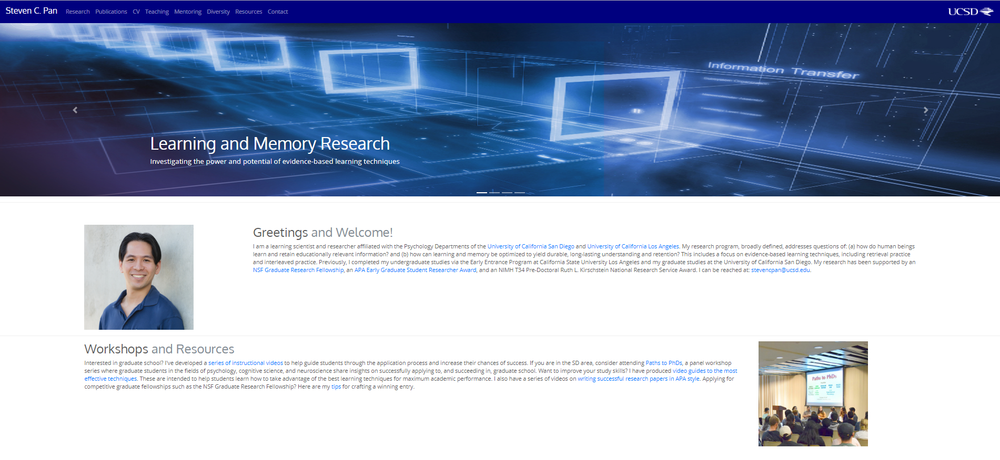